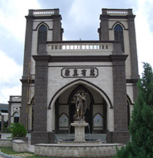

HISTORY
Parish History
SMC holds the distinction of being the first Christian church to be built in Ipoh. It began humbly in 1890 with a few parishioners, mainly Chinese settlers in the Kinta Valley. Fr. Emile Barillon (MEP) (1890-1892), a French missionary priest, was the church’s first parish priest. The church building was originally a simple wooden structure, built on the exact spot of the present Main Convent school hall.
The church’s second parish priest, Fr. Pierre Perrichon (MEP) (1892-1900), acquired the present site in 1893 and began construction of the present building. The church was built by a Chinese Christian contractor named Mr. Leong Ah Choong for a then princely sum of $14,000. Construction of the Gothic-style church took two years. The new church was completed in 1895 and had its official blessing in 1896. The four Chinese characters above the front arch of the porte cochere states that “God is the Source of all truth”.
As the parish continued to grow over the years, more buildings were erected on the grounds to meet the needs of the expanding parish community. The parochial house, housing the parish’s administrative offices and priests’ quarters, was built by Fr. Matthias Ki (1970-1979). As well as renovating the church with a new sanctuary and a fresh coat of paint, Fr. Peter Pang (1984-1995) also commissioned the building of the three storey Parish Activity Centre and Chinese-style shrine dedicated to Our Lady of Fatima.
In present times, the church has undergone extensive renovations and restoration work under the supervision of Fr. Michael Cheah (2005-2010), who was also responsible for the construction of the new St. Anne’s Church in Bukit Mertajam. Building works undertaken and completed included the exterior and interior renovations of the church building, parish activity centre, parochial house and funeral parlour and the construction of a new columbarium and outdoor Stations of the Cross. Beautification works included repainting of Our Lady’s Shrine, erection of fountains (including a bronze statue of St. Michael the Archangel) and planting of trees and flowers on the church grounds. Practical touches were also added in the form of people-friendly walkways and reorganisation of the church traffic system. All works were completed in time for the parish’s 120 years jubilee celebrations in 2010.
Click here for list of parish priests and religious.
|
|
|  |
|
|

|
|
|

|